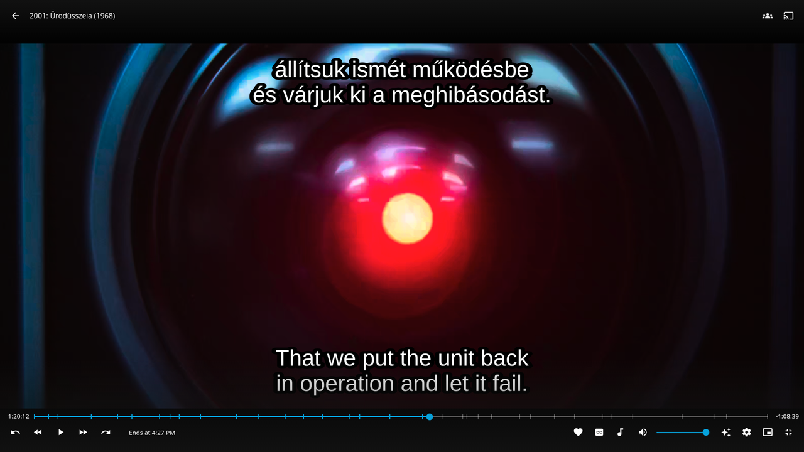

Bazarr+ v2.4.0 (Prism) adds three subtitle processing features: combined bilingual or trilingual subtitles built from files already on disk, source scoring and direct translation for embedded tracks, and multi-engine synchronization with side-by-side output comparison. This guide covers all three.
Combined subtitles
Combined output takes subtitles you already have on disk and composes them into a single bilingual or trilingual subtitle, written as SRT or ASS. You pick two or three languages, and Bazarr+ aligns their cues into one file.

When more than one variant of a language is on disk, Bazarr+ resolves the source by priority: plain first, then HI, then forced. ASS output supports cue positioning so you can place each language at the bottom, top, or middle of the frame. SRT output stacks the lines in a single block.
Per language profile
Set up combined output once per language profile so it runs automatically as part of normal processing.
- Open Settings > Languages and edit a language profile.
- In the CombineRuleEditor, toggle combined output on.
- Pick 2 or 3 languages to combine.
- Choose the output format: SRT or ASS.
- Save the profile.
After this, whenever Bazarr+ finishes processing subtitles for an item on that profile and all chosen source languages are present on disk, it builds the combined file automatically. If a source language is missing, the combine is skipped and no error is raised.
On demand
You can also build a combined output now, without waiting for the next processing pass.
- On a movie, episode, or series detail page, use the Combine Subtitles toolbox button.
- On the Movies or Series list pages, use the mass-combine action to build combined output across the selected items.
The same source rules apply: only on-disk subtitles are used, source priority is plain > HI > forced, and items that do not have all source languages are skipped.
Managing combined output
Combined subtitles are indexed alongside other generated outputs and marked with a CombinedSubtitleBadge in the subtitle table. Each combined row has an overflow menu:
- Rebuild: recompose the combined file from the current on-disk sources.
- View: open the combined subtitle.
- Edit: open the combined subtitle in the subtitle editor. An SRT combined opens as one stacked cue per timestamp; an ASS combined opens as its separate positioned cues (one per language) without false overlap warnings.
- Delete: remove the combined file.
A combined output is kept as a single file: rebuilding in a different format removes the stale sibling left in the previous format.
API endpoints
The on-demand and mass-combine actions call these endpoints. The series endpoint is the batch form that combines across the show's episodes.
POST /api/movies/<id>/subtitles/combine
POST /api/episodes/<id>/subtitles/combine
POST /api/series/<id>/subtitles/combineEmbedded subtitle scoring and translate-from-embedded
Embedded subtitles are tracks stored inside the media container rather than as separate files. Bazarr+ now treats those in-container tracks as a real subtitle source.
Source scoring in history
An embedded track is recorded in history as a source-quality result at a 100% score. In the subtitle table, the embedded track shows that 100% score so you can see at a glance that the item already carries an in-container subtitle for that language.
Translate from an embedded track
You can translate directly from an embedded text track without first downloading a separate subtitle. The embedded row exposes a translate-only action in its menu.
- In the subtitle table, find the embedded track you want to translate from.
- Open its action menu and choose the translate-only action.
- Bazarr+ extracts the text stream with ffmpeg to
{config_dir}/extracted_subs/. - It then runs your configured translator on the extracted text and writes the translated subtitle.
Translation uses whatever engine you have set up in Bazarr+. See AI Subtitle Translation for configuring a translator. Sync outputs and combined outputs are intentionally excluded from the list of sources you can translate from, so you translate from real source tracks rather than from generated files.
Multi-engine synchronization
Synchronization shifts subtitle timing to match the audio. Bazarr+ now lets you choose which sync engine to run and compare the result before you keep it.
You can start a sync in two places:
- From the subtitle editor, on a single subtitle.
- From the mass-sync form, across multiple items at once.
In either place you pick the engine to run. When the editor sync finishes, the SyncOutputCompareModal shows the produced output next to the original side by side, so you can confirm the timing improved before committing to it.
Next steps
- AI Subtitle Translation to set up the translator used by translate-from-embedded
- Provider Hub to install and manage subtitle provider plugins
- Getting Started if you have not installed Bazarr+ yet